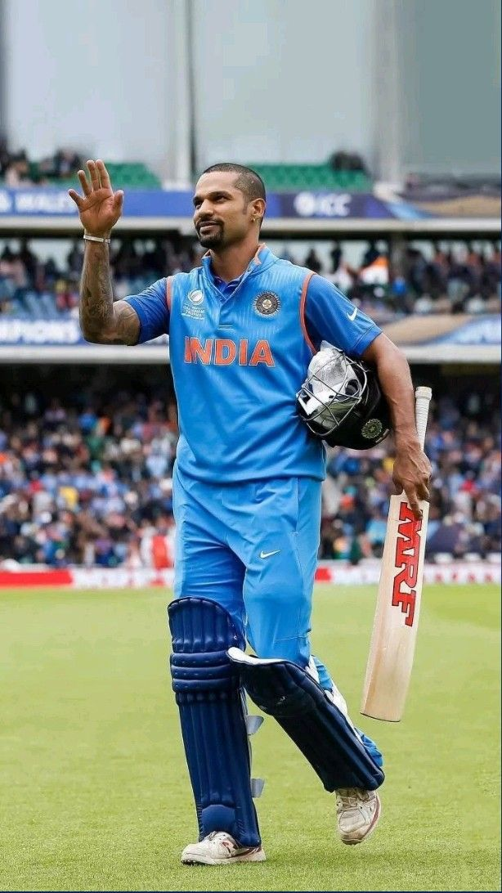

GAMBHIR DISCUSSES SQUAD FOR SL SERIES WITH SELECTORS; OUTLINE HIS VISION FOR INDIA

Gautam Gambhir is finally off the blocks and his debut as the head coach of the Indian team, interestingly enough, was indoor rather than outdoor. The new man in charge of the Indian team held a meeting with the national selection committee. This 'productive meeting,' as it has been termed, lasted for over an hour. The meeting, facilitated by the Board of Control for Cricket in India (BCCI) on Tuesday afternoon, included members of Ajit Agarkar's selection committee, Gambhir, and BCCI secretary Jay Shah, who convened the meeting. It was held online, with Gambhir participating from his home in New Delhi. Although it was an introductory meeting, the selection committee members and the new coach had a robust exchange of ideas about the future of Indian cricket and about the composition of the squad for the forthcoming white ball series in Sri Lanka. Known for his no-nonsense approach as a coach, Gambhir provided his inputs to the committee regarding the type of players he wants. The overarching theme was a strong commitment.
Shikhar Dhawan announces retirement from all cricket
Dhawan played 34 Tests, 167 ODIs and 68 T20Is for India © Getty Shikhar Dhawan has announced his retirement from international and domestic cricket with immediate effect. The left-hander took to social media to call time on his career spanning over 13 years for India, in which he played 34 Tests, 167 ODIs and 68 T20Is scoring 2315, 6793 and 1579 runs respectively in the three formats. "It's important to turn the page to move forward in a story, and in life. That's why, I am announcing my retirement from international and domestic cricket," Dhawan said in his retirement video. "I've told myself to not feel sad that you won't play for India again, but feel happy that you played for the country."